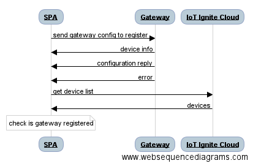

Sequence Diagram

Discover
To discover Ignite getaways nearby, list the Wifi SSIDs and search IGNITE_GATEWAY prefix. Note that unregistered gateways wait for connection in Wifi hotspot mode.
var filter = "IGNITE_GATEWAY";
NetworkService.listWifi(function(wifi){
var igniteWifiArray = NetworkService.filterWifi(wifi, filter);
}
Register
When you find a gateway, it is time to register it to your IoT-Ignite Platform. Connect to that gateway with the help of the WifiWizard plugin handled in Network Service. After connecting to that gateway, send configuration to it via websocket.
$q is a service that helps you run functions asynchronously, and use their return values (or exceptions) when they have completed their processing. For more information about that please visit https://docs.angularjs.org/api/ng/service/$q
gatewayConfig contains information about Internet connection and service provider so that gateway could be used as a IoT-Ignite Gateway.
var gatewayConfig = {"type" : "CONFIGURATION", "params":{"ssid": ssid,"ssidPassword":pass,"appKey":success.data.appKey, "activationCode" : success.data.activationCode, "profileName" : profile, "previousIp" : clientIp, "logPort" : 12734}}
function sendGatewayConfig(timeout, gatewayIp, gatewayConfig, logFunc) {
var deferred = $q.defer();
try {
var ws = new WebSocket("ws://" + gatewayIp + ":12732");
var configurationReplyMsg = false;
var deviceInfoMsg = false;
var deviceInfo = "";
ws.onopen = function() {
console.log("Sending configuration " + JSON.stringify(gatewayConfig));
ws.send(JSON.stringify(gatewayConfig));
logFunc("success", "Successfully connected to Gateway Socket ", 2000);
};
ws.onmessage = function(evt){
console.log("Message received: " + evt.data);
var message = JSON.parse(evt.data);
if(message.type == "DEVICE_INFO"){
deviceInfo = message;
deviceInfoMsg = true;
} else if(message.type == "CONFIGURATION_REPLY" && message.params.result == "SUCCESS"){
configurationReplyMsg = true;
} else {
deferred.reject("Reject error: " + JSON.stringify(message));
ws.close();
}
if(deviceInfoMsg && configurationReplyMsg){
deferred.resolve(deviceInfo);
ws.close();
}
}
ws.onerror = function(exception){
console.log("Could not connect to : " + gatewayIp);
deferred.reject("Could not connect to : " + gatewayIp);
ws.close();
}
} catch(exception) {
console.log("Error: " + exception);
deferred.reject("Reject error: " + exception);
ws.close();
}
setTimeout(function () {
deferred.reject("Send gateway config timeout");
}, timeout);
return deferred.promise;
}
After configuration is sent successfully, it is time to check that this gateway is registered to Service Provider's IoT-Ignite Platform. To get registered device list, device summary must be requested from IoT Ignite cloud.
$http({
method: 'GET',
headers: {
'Authorization': 'Bearer ' + accessToken
},
url: API_URL + '/device/summary?page=0&size=100'
})